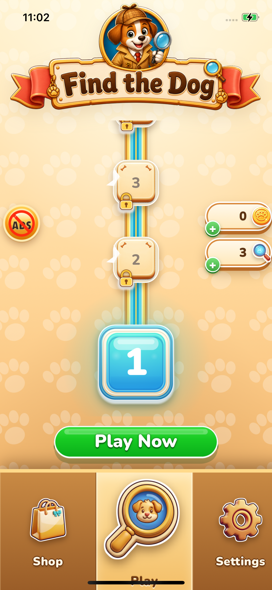
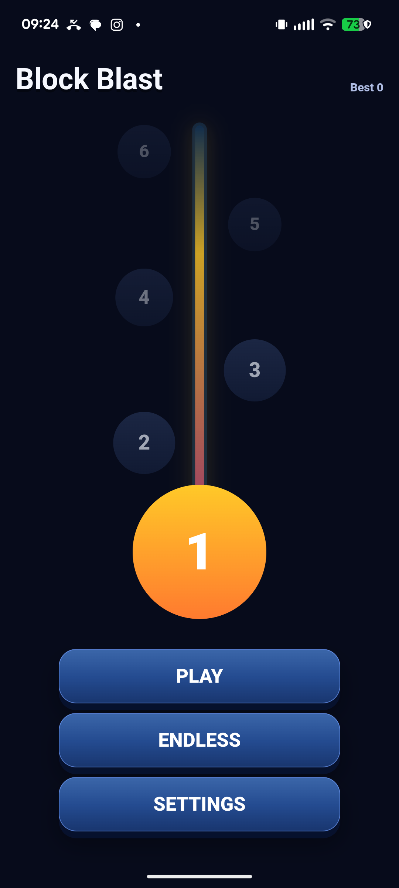
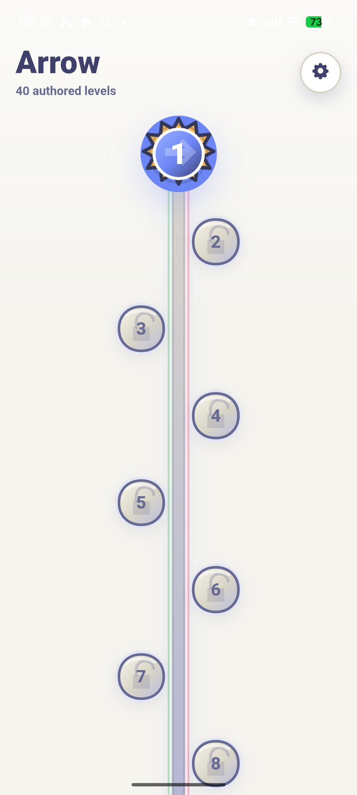

All three games ported to fabrika v2 and running on their target devices, sagas live.
FTD deep-converged on the iPhone (parked at 2 cosmetic defects needing one interactive session);
android lane proven end-to-end first-try; block_blast + arrow playable on the Pixel with their derived sagas.
Full learning write-up (per-game scorecards + cross-game synthesis) in .work/overnight-ledger.md.

games/find_the_dog/refs/device/menu-shipped.png.

| Lane | State | Evidence |
|---|---|---|
| FTD port (FOR-SURE-COPY, iPhone) | Deep-converged, parked honestly — engine/saga/corpus carried verbatim, all 6 states device-captured, converge-1 closed 4/6 named divergences. Open: Play-label safe-area clip + top rhythm — 3 fix rounds moved zero pixels; CSS/HTML/plist/capacitor-config all v1-identical. Needs one 5-min Safari-Web-Inspector session (viewport instrumentation already in the installed build). | docs/evidence/2026-07-08-1700-ftd-converge3-real/ |
| Android lane (ubuntu-server → Pixel) | Proven end-to-end first try: rsync → build → cap add android → gradle → adb install, both games. Capture driver (uiautomator element-gate) still with its worker. | ledger ~15:15; docs/evidence/2026-07-08-1430-bb-pixel-first/ |
| block_blast saga (derived) | Live on device — "Stage 1 / Target: Reach…" + Endless preserved. Chips fixed + verified (token wiring; computed-style asserts added). Taste verdict: req_f0d88b. | docs/evidence/2026-07-08-1730-pixel-polish1/ |
| arrow saga (derived) | Live on device — 40 nodes. Chips fixed + verified; board now legible. Direction verdict: req_f0d88b. | same dir |
| UI-KIT single path | Landed after the crop close-out caught a double-mount that all green gates missed; ribbon saga closed for good (5 rounds total) with one-node + position assertions now guarding it. | docs/evidence/2026-07-08-1130-ribbon-final/crops/ |
| Item | What's needed |
|---|---|
Gallery req_87e0d7 | FTD first device captures — approve direction / flag divergences. |
Gallery req_f0d88b | Android saga boards post-fix — approve directions (supersedes the board half of req_d2e23f). |
Gallery req_4052ed | (from yesterday) marble_run ribbon transparency crops. |
| FTD safe-area (5 min, phone in hand) | Safari Web Inspector → the installed dev build publishes viewportMetrics; read env(safe-area-inset-bottom) live. Card YzgV6mvj has the trail. |
| Family Link | com.ecffri.arrows locks the Pixel on launch — answer the screen-time dialog once so the shipped-arrow ref can be captured. |
Works: the port pattern scaled to 3 heterogeneous games in one night; the harness contract transplanted everywhere and its evidence loop caught 2 would-have-shipped regressions; all 3 saga derivations were implemented as derived; the android recipe had zero platform surprises.
Improve (cards queued MINE3-1…4): jsdom is blind to paint — add computed-style/paint assertions to the kit test class; var() to an undefined token paints nothing silently — add the inverse-orphan lint; native-shell geometry (safe-area) needs a device-proven template recipe + machine-readable viewport metrics; landing flow needs deterministic lockfile-conflict resolution.
Generated by the overnight conductor. All numbered claims trace to committed evidence dirs; open items are marked, nothing above is claimed beyond its capture.